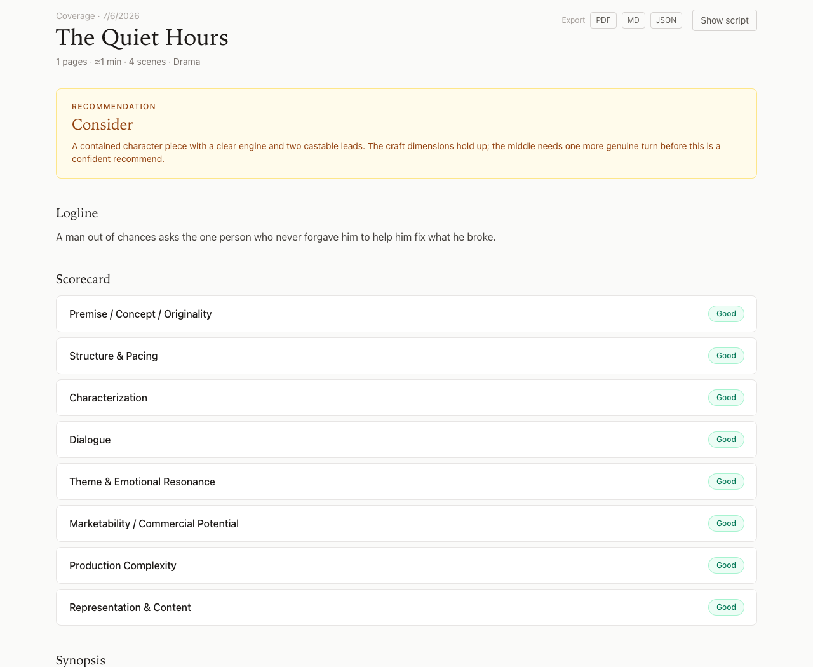

Drop in a screenplay. Get a scored, evidence-cited coverage report — logline, synopsis, rubric, characters, comps, budget tier, and a Pass / Consider / Recommend call — from AI models running entirely on your machine.

Every score in a ScreenScore report must cite its evidence: scene numbers and quoted lines, checked mechanically against your script. Click a citation and the app highlights the exact line in your screenplay.
Premise, structure & pacing, characterization, dialogue, theme, marketability, production complexity, representation & content — each Weak / Fair / Good / Excellent with a written rationale and quoted evidence.
Citations that can't be found in your script are discarded — and a score that loses its evidence is withheld, not published. The report says “insufficient evidence” rather than making something up.
Logline, act-by-act synopsis, character breakdowns with dialogue share, comparable titles, budget tier, content rating, scene-level notes, and the final call — exportable to PDF, Markdown, or JSON.
ScreenScore keeps your projects, drafts, reports, and your own notes in a local library. Re-upload a revised draft and it lands in the same project's history.
The anti-flattery rule. Every draft is scored blind — the model never sees your earlier scores, so it can't tell you what you want to hear. A separate comparison pass then reports what actually changed: what improved, what persisted, what's new, and — just as prominently — what got worse.
ScreenScore runs as a small local web app. You start it once with Docker (a free tool that runs the app in a sandbox), then use it in your browser like any website — except nothing ever leaves your machine.
Download it from docker.com, open the app once, and leave it running. You never need to touch it again.
Ollama runs the AI models. Get it from ollama.com and open it once — installing it natively (rather than inside Docker) lets the models use your Mac's GPU, which is several times faster. On Linux you can skip this step; a bundled model runner is included.
Open the Terminal app and paste these three lines, then press return:
git clone https://github.com/acharyaparth/ScreenScore.git cd ScreenScore docker compose up
The first run builds the app (a few minutes). When the text stops scrolling, it's ready.
Go to http://localhost:8686 in your browser.
The app checks your hardware, recommends the right AI models for your machine, and offers a
Download button for each — that download is the only time ScreenScore touches the
internet, and you start it.
PDF, Final Draft (.fdx), Fountain, or plain text. Watch the analysis progress scene by scene, then read your report. A full-length feature takes a while — minutes, not seconds — because a real read happens on your own hardware.
Docker Desktop isn't running. Open the Docker app, wait for the whale icon to settle, and
run docker compose up again from the ScreenScore folder.
Use the Download button on the Analyze page (or run ollama pull with the model
name it shows). Models are several gigabytes — the first download takes a while on ordinary
broadband. That's a one-time cost.
Something else on your machine is using port 8686. Stop it, or edit the first number in the
ports: line of docker-compose.yml (e.g. 8787:8686) and go to
localhost:8787 instead.
No. Analysis runs entirely locally — once your models are downloaded, ScreenScore works with
the internet disconnected. Try it: turn off Wi-Fi and run an analysis. Your scripts, reports,
and notes live in a local data folder that you own and can delete at any time.